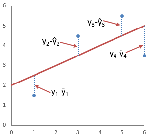

Лекція 2. Поліцейські формальності.
План
Сутність поліцейських формальностей
Туристична поліція
Прогнозування чисельності туристів, які перетинають кордон
§ 1. Сутність поліцейських формальностей
Під поліцейськими формальностями розуміють процедури, пов'язані з перевіркою дотримання громадянами, які перетинають державний кордон при в'їзді і виїзді з країни, паспортно-візового режиму, з'ясуванням мети їхнього прибуття в країну, місцезнаходження і термінів перебування.
У багатьох країнах при проходженні на кордоні паспортного контролю необхідно заповнювати спеціальні картки прибуття. Дуже часто такі картки видаються ще на борту літака, в потязі безпосередньо перед в'їздом у країну. В них турист вписує свої прізвище та ім'я, місце народження (країну), професію, вказує мету поїздки й адресу постійного місця проживання (населений пункт чи країна). Це робиться з метою контролю за в'їздом-виїздом громадян, у тому числі іноземців (нерезидентів), а також з метою отримання інформації для туристичної статистики.
Підставою для пропуску через державний кордон туристів, транспортних засобів, вантажів, товарів і тварин є наявність документів на право виїзду чи в'їзду (паспортів, віз та ін.). Не підлягають пропуску через державний кордон іноземні громадяни, яким відповідно до законодавства країни не дозволений в'їзд чи заборонений виїзд із неї.
Пропуск туристів, їхніх транспортних засобів, товарів і вантажів через державний кордон регулюється законодавством країни в'їзду. Прикордонний контроль включає перевірку підстав для пропуску через кордон, виявлення і затримку порушників правил перетину кордону, вантажів, товарів і тварин, ввезення чи вивезення яких заборонено законодавством країни, а також порушників митного, імміграційного, санітарно-карантинного, ветеринарного, транспортного та іншого видів контролю.
Туристи чи транспортні засоби, які перетинають державний кордон із порушенням встановлених законом правил, визнаються порушникам" державного кордону.
Поліцейські формальності, пов'язані з процедурою контролю за дотриманням правил і термінів перебування іноземних туристів у країні і виїзду з неї, в багатьох країнах виконує спеціально створена туристична поліція.
§ 2. Туристична поліція
Існує: Єгіпет, Турція (підрозділ), ОАЄ, Тайланд.
Особливості роботи:
Звернення, наприклад, з приводу дорожньо-транспортної пригоди, крадіжки, різних суперечок або проблем в готелях, магазинах і безліч інших неприємних інцидентів.
Як правило, поліцейських цього підрозділу можна впізнати за відмітним значком на рукаві "Tourist Police", або рекламним слоганам номеру телефону. Поліцейські Еміратів несуть чергування у формі, але частіше - у цивільному, це поліцейські-агенти.
Частіше поліцейські розмовляють на декількох мовах.
§ 3. Прогнозування чисельності туристів, які перетинають кордон
Завдання.
Розрахувати прогнозне значення чисельності туристів, які перетнуть кордон України-Білорусії влітку в 2022 році за методом найменших квадратів.
Метод найменших квадратів — метод знаходження наближеного розв'язку надлишково-визначеної системи. Часто застосовується в регресійному аналізі. На практиці найчастіше використовується лінійний метод найменших квадратів, що використовується у випадку системи лінійних рівнянь.

|
Рік |
Чисельність туристів, які перетинають кожного літа кордон, тис. осіб |
|
2007 |
8 |
|
2008 |
6 |
|
2009 |
10 |
|
2010 |
6 |
|
2011 |
10 |
|
2012 |
13 |
|
2013 |
9 |
|
2014 |
11 |
|
2015 |
15 |
|
2016 |
17 |
Рішення ŷ=5.13+0.976x
(Х 2022; Y 21)